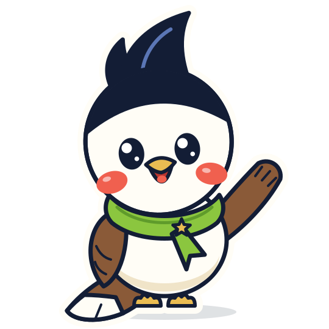
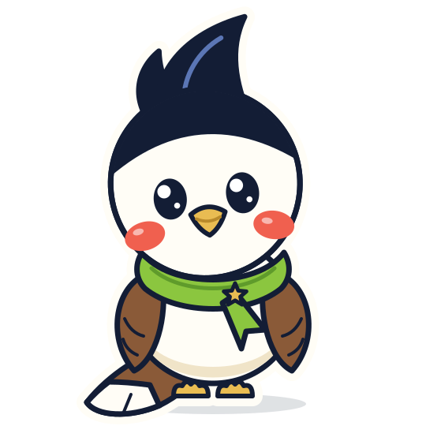
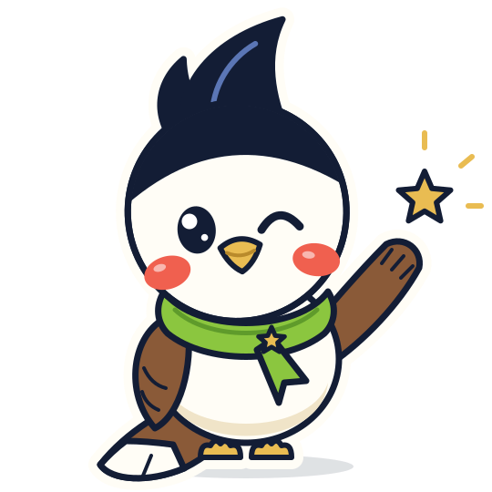
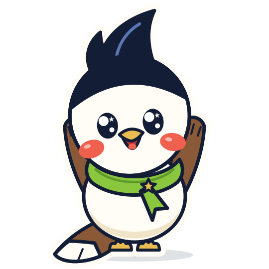
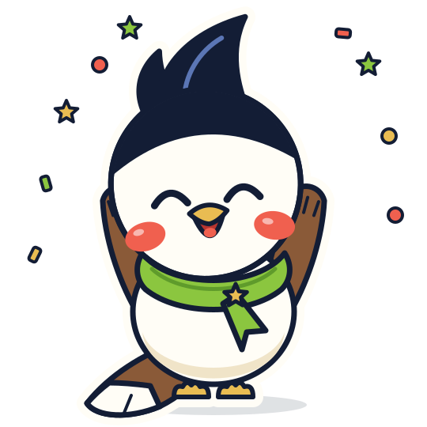
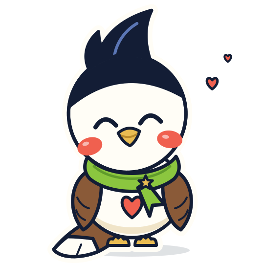
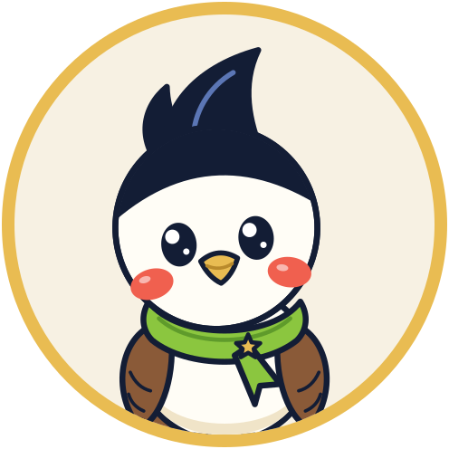

Pip
The Happy English Club mascot: a chào mào, the crested songbird every Vietnamese child knows. Its name begins with chào, hello. Pip is the bird who learned to say it in English.

On ivory: the app in light modeOn navy, animated: the reception TV

On deep ink: the app in dark modeSix moods




Small sizes

Colours
Ink
#131D35crest, cap, outline - the design system's inkCream
#FFFDF6face and belly; also the sticker edgeChestnut
#8A5A38wings and tail, as on the real birdCoral
#F0604Fthe red whisker: Pip's own colour, used nowhere elseBrass
#E9BC52beak, feet, the star pinLeaf
#8BC63Fthe club scarf - the logo's green